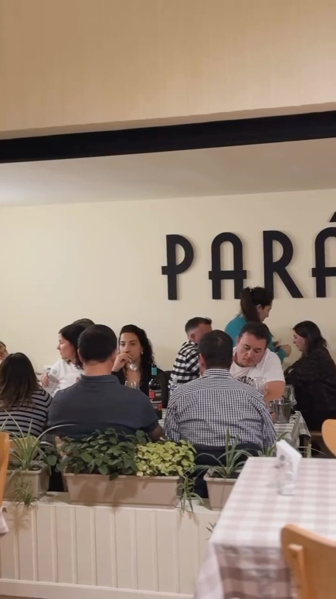
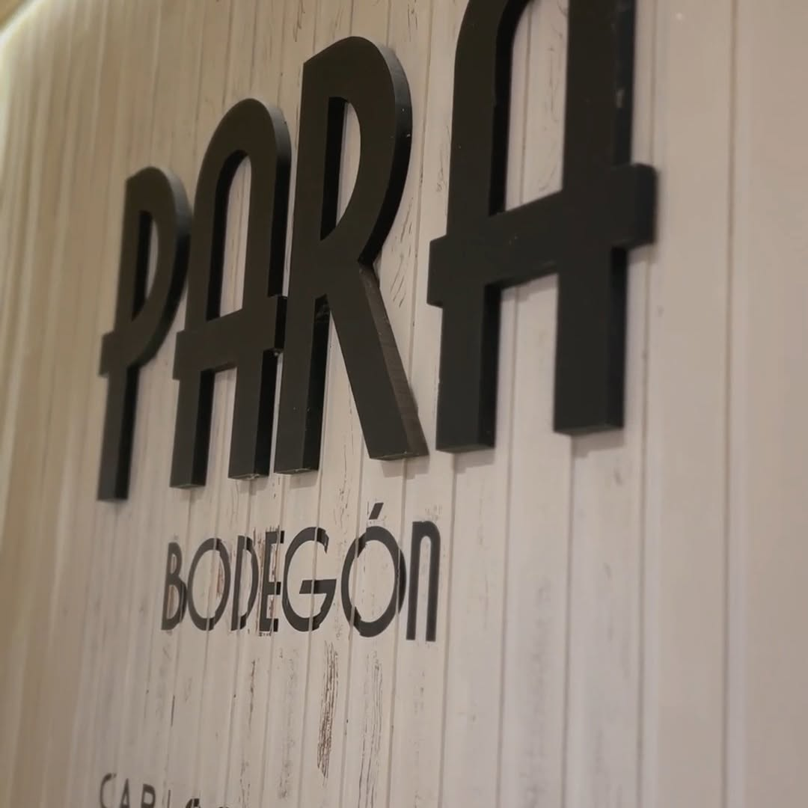
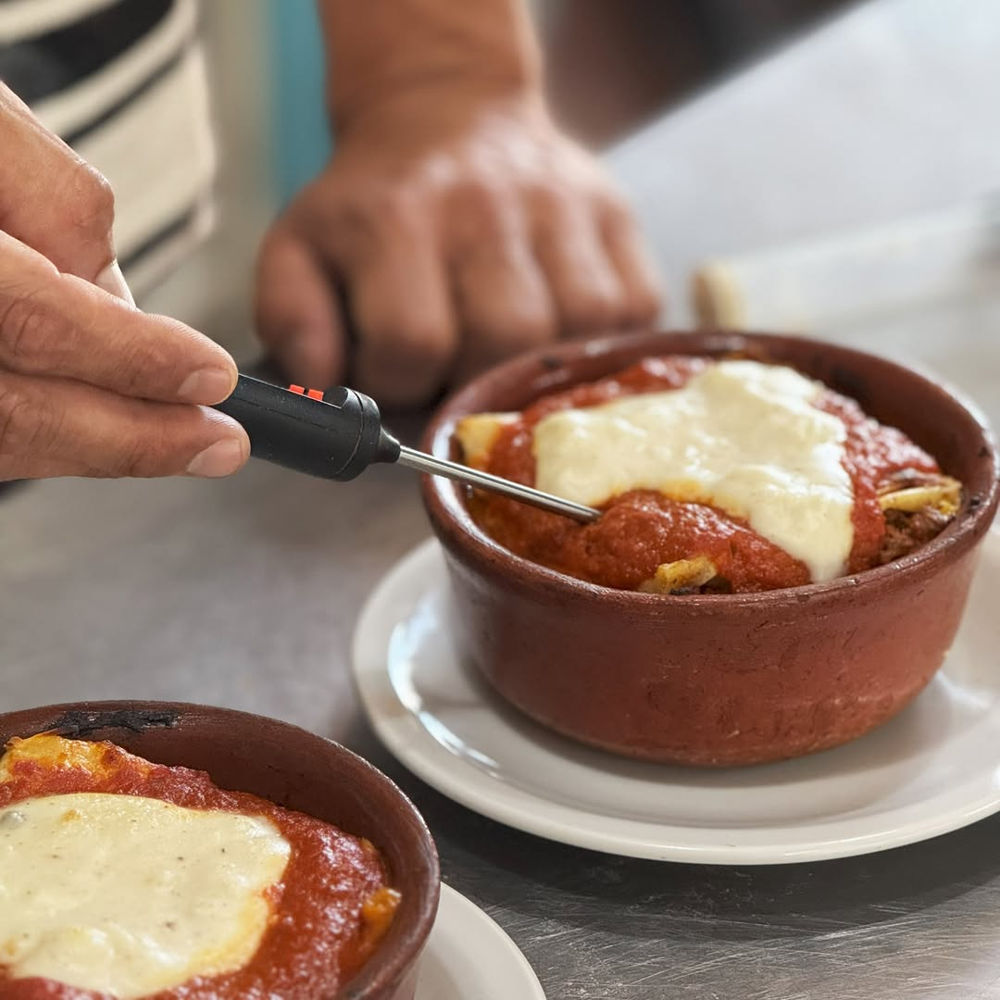
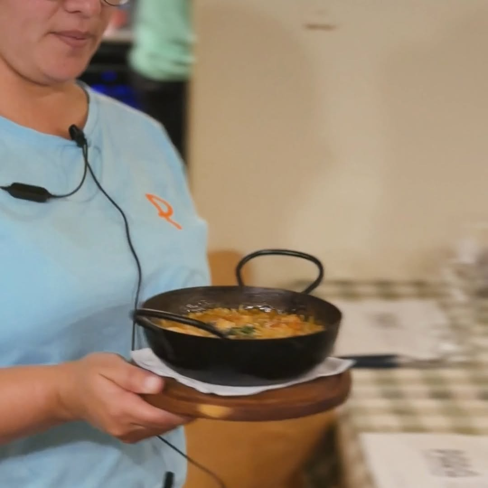
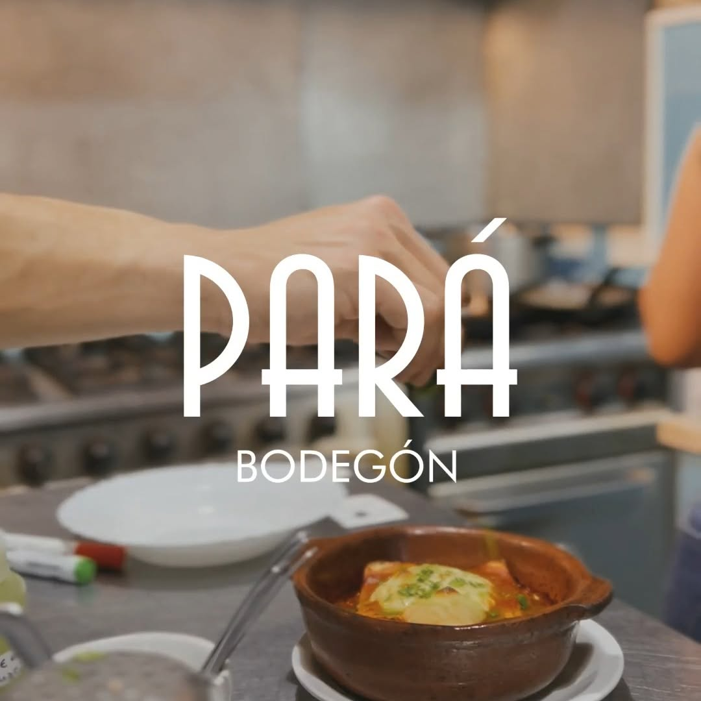
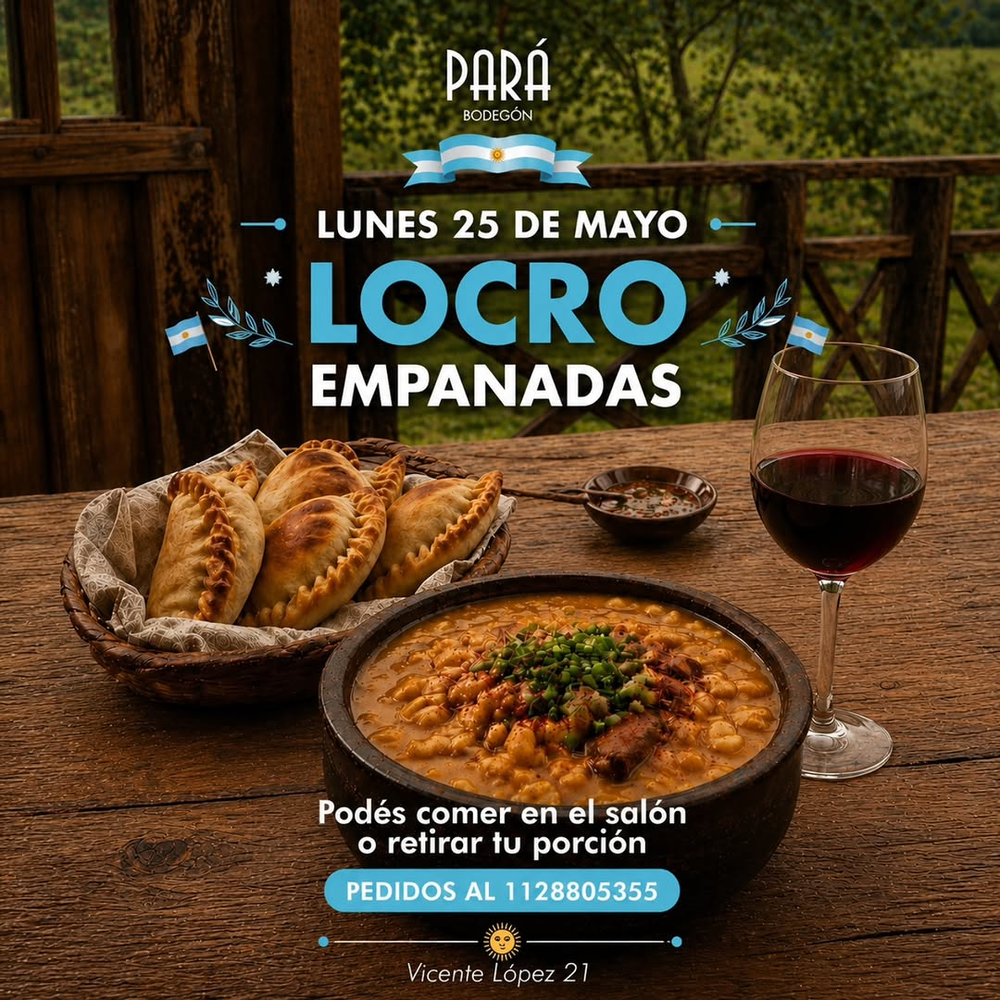

Cazuelas de barro
Llegan a la mesa burbujeando, con queso gratinado y pan para no dejar nada.

Carlos Casares
Cazuelas, pastas, empanadas y una copa de vino en un salón con manteles a cuadros. Todo hecho acá, para venir en familia, con amigos o después del trabajo.



El Bode
Cinco años cocinando para Casares. Platos abundantes, recetas de siempre y un salón donde la mesa se arma sola.
Cazuelas de barro que llegan burbujeando, pastas caseras los domingos, empanadas fritas y locro cuando el calendario lo pide. Una carta corta que cambia con la semana y una barra para quedarse después de comer.
Te esperamos en el Bode 💛
Toda la semana
Si este finde no tenés planes, es porque no querés.
Lunes a viernes
Plato del día, abundante y rápido, para cortar la jornada bien comido.
Jueves
Tapeo + copa de vino o trago. La noche de la semana para juntarse.
Viernes
Picadas, tragos y vino para arrancar el finde apenas termina la semana.
Sábado
Noche de bodegón: cazuelas, milanesas y los platos que nos hicieron conocidos.
Domingo
Empanada, fuente de tallarines y copa de vino. Mesa larga, sobremesa larga.
Platos del Bode
Llegan a la mesa burbujeando, con queso gratinado y pan para no dejar nada.

La lasagna de la casa y la fuente de tallarines de los domingos.

En cada fecha patria, el locro tradicional y las empanadas fritas, para comer en el salón o retirar.
La carta completa, con precios del día, te la mandamos por WhatsApp.
Festejá en el Bode
Almuerzos y cenas para grupos, con menú armado a medida y el salón listo para la ocasión.
Agenda
Degustaciones, noches especiales y fechas patrias.
Pronto nuevas fechas.
Vení